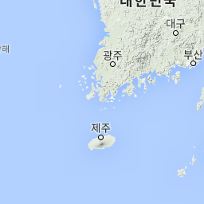
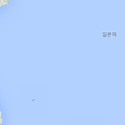
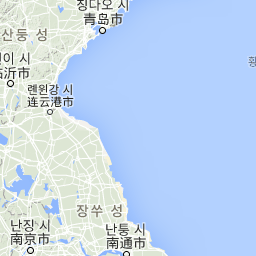
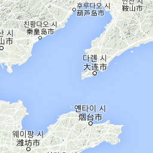
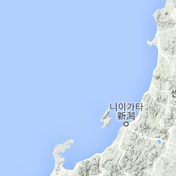
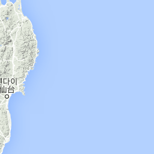
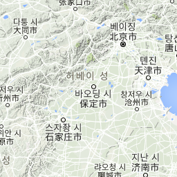
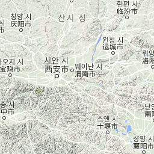

지도 데이터
지도 데이터 ©2016 Google, SK planet, ZENRIN
지도 데이터
지도 데이터 ©2016 Google, SK planet, ZENRIN
지도 데이터 ©2016 Google, SK planet, ZENRIN
이용약관
지도 오류 신고
지도
지형
위성
라벨
Data: data • Chart ID:
MapID1a8c57065141
•
googleVis-0.5.10
R version 3.2.5 (2016-04-14) •
Google Terms of Use
•
Documentation and Data Policy